공조냉동기계기사(구) (2004-05-23 기출문제)
1과목: 기계열역학
1. 순수한 물질로 된 밀폐계가 가역단열 과정 동안 수행한 일의 양은? (단, 절대량 기준으로 한다.)
- 엔탈피의 변화량과 같다.
- 내부에너지의 변화량과 같다.
- 정압과정에서 이루어진 일의 양과 같다.
- 가역 단열과정에서 일의 수행은 있을 수 없다.
(정답률: 54%)

2. 비가역 단열변화에 있어서 엔트로피 변화량은 어떻게 되는가?
- 증가한다.
- 감소한다.
- 변화량은 없다.
- 증가할 수도 감소할 수도 있다.
(정답률: 60%)
3. 노즐(nozzle)에서 단열팽창하였을 때, 비가역 과정에서 보다 가역과정의 경우 출구속도는 어떻게 변화하는가?
- 빠르다.
- 늦다.
- 같다.
- 구별할 수 없다.
(정답률: 37%)
4. 다음 사항 중 틀린 것은?
- 단열된 정상유로에서 압축성 유체의 운동에너지의 상승량은 도중의 비체적의 변화과정에 관계없이 엔탈피의 강하량과 같다.
- 교축(throttling)과정에서는 엔트로피가 일정하다.
- 흐름이 음속이상이 될 때는 임계상태 이후의 축소 노즐의 유량은 배압의 영향을 받지 않게된다.
- 단열된 노즐을 유체가 유동할 때 노즐내에서는 마찰 손실이 생긴다.
(정답률: 39%)
5. 단열 밀폐된 실내에서 [A]의 경우는 냉장고 문을 닫고, [B]의 경우는 냉장고 문을 연채 냉장고를 작동시켰을 때 실내온도의 변화는?
- [A]는 실내온도 상승, [B]는 실내온도 변화 없음
- [A]는 실내온도 변화 없음, [B]는 실내온도 하강
- [A],[B] 모두 실내온도가 상승
- [A]는 실내온도 상승, [B]는 실내온도 하강
(정답률: 69%)
6. 압력 P1, P2사이에서(P1＞P2) 작동하는 이상 공기 냉동기의 성능계수는 얼마 정도인가? (단, P2/P1 = 0.5, k = 1.4이다.)
- 2.32
- 3.32
- 4.57
- 5.57
(정답률: 42%)
7. 복수기(응축기)에서 10 kPa, 건도x = 0.96 인 수증기를 매시간 1000 kg 응축시키는 데 필요한 냉각수의 유량은? (단, 냉각수는 15℃에서 들어오고 25℃에서 나간다. 그리고 10kPa의 포화액과 포화증기의 엔탈피는 각각 hf = 191.83 kJ/㎏, hg = 2584.7 kJ/㎏ 이며, 물의 비열은 4.2 kJ/㎏.K 이다.)
- 약 27400 kg/h
- 약 34800 kg/h
- 약 54700 kg/h
- 약 75500 kg/h
(정답률: 53%)
8. 다음 사항중 틀린 것은?
- 랭킨 사이클의 열효율은 터빈 입구의 과열증기 상태와 복수기의 진공도에 의해서 거의 결정된다.
- 랭킨 사이클의 열효율을 열역학적으로 개선한 것이 재생 랭킨 사이클이다.
- 증기 터빈에서 복수기의 배압은 냉각수의 온도에 의해서 정해지므로 자유로이 바꿀수는 없다.
- 랭킨 사이클의 열효율은 터빈의 입구 압력, 입구온도의 영향만을 받는다.
(정답률: 60%)
9. 가역 단열 과정에서 엔트로피는 어떻게 되는가?
- 증가한다.
- 변하지 않는다.
- 감소한다.
- 경우에 따라 증가 또는 감소한다.
(정답률: 50%)
10. 압력용기 속에 온도 95℃, 건도 29.2％인 습공기가 들어있다. 압력이 500kPa일때 비체적(V)과 내부에너지(U)는 약 얼마인가?(단, V, U의 단위는 m3/kg, kJ/kg이고, 95℃에서 포화액체 V'= 0.00104, 건포화증기 V" = 1.98, 포화액체 U'= 398, 건포화증기 U" = 2501 이다.)
- 0.257 m3/kg, 1879 KJ/kg
- 0.357 m3/kg, 2225 KJ/kg
- 0.579 m3/kg, 1011 KJ/kg
- 0.678 m3/kg, 3756 KJ/kg
(정답률: 44%)
11. 그림과 같은 오토사이클의 열효율은? (단, T1=300K, T2=689K, T3=2364K, T4=1029K 이다.)
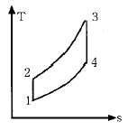
- 37.5 %
- 56.5 %
- 43.5 %
- 62.5 %
(정답률: 57%)
12. 압력이 100 kPa이며 온도가 25℃인 방의 크기가 240 m3이다. 이 방안에 들어있는 공기의 질량은 약 얼마인가?(단, 공기는 이상기체로 가정하며, 공기의 기체상수는 0.287 kJ/kg.K이다.)
- 3.57 kg
- 0.280 kg
- 0.00357 kg
- 280 kg
(정답률: 50%)
13. 250 K에서 열을 흡수하여 320 K에서 방출하는 이상적인 냉동기의 성능 계수는?
- 0.28
- 1.28
- 3.57
- 4.57
(정답률: 64%)
14. 대기압이 95 kPa 인 장소에 있는 용기의 게이지 압력이 500 cmH2O를 나타내고 있다. 용기의 절대압력은?
- 101 kPa
- 49101 kPa
- 144 kPa
- 99 kPa
(정답률: 42%)
15. 다음 중 이상적인 오토사이클의 효율을 증가시키는 방안으로 모두 맞는 것은?
- 최고온도 증가, 압축비 증가, 비열비 증가
- 최고온도 증가, 압축비 감소, 비열비 증가
- 최고온도 증가, 압축비 증가, 비열비 감소
- 최고온도 감소, 압축비 증가, 비열비 감소
(정답률: 54%)
16. 마찰이 없는 피스톤이 끼워진 실린더가 있다. 이 실린더 내 공기의 초기 압력은 300 kPa 이며 초기 체적은 0.02m3 이다. 실린더 아래에 분젠 버너를 설치하여 가열하였더니 공기의 체적이 0.1 m3 로 증가되었다. 이 과정에서 공기가 행한 일은 얼마인가?
- 6.0 kJ
- 24.0 kJ
- 30.0 kJ
- 36.0 kJ
(정답률: 56%)
17. 열역학 제 2법칙에 대한 설명 중 맞는 것은?
- 과정(process)의 방향성을 제시한다.
- 에너지의 량을 결정한다.
- 에너지의 종류를 판단할 수 있다.
- 공학적 장치의 크기를 알 수 있다.
(정답률: 55%)
18. 다음 설명 중 맞는 것은?
- 열과 일은 열역학 제 1법칙에만 사용된다.
- 순수물질이란 균질하고 깨끗한 물질로 정의한다.
- 대기압하의 공기는 순수물질이다.
- 압축성계수는 실제 기체의 몰비체적에 대한 이상 기체의 몰비체적의 비율로 정의한다.
(정답률: 6%)
19. 계 내에 임의의 이상기체 1kg이 채워져 있다. 이상 기체의 정압비열은 1.0 kJ/kg· K이고, 기체 상수는 0.3kJ/kg· K이다. 압력 100kPa, 온도 50℃의 초기 상태에서 체적이 두 배로 증가할 때까지 기체를 정압과정으로 팽창 시킬 경우, 필요한 열량은 약 몇 kJ인가? (단, 비열비 =1.43 이다.)
- 226.1 kJ
- 323 kJ
- 96.9 kJ
- 419.9 kJ
(정답률: 47%)
20. 재열 및 재생 사이클에 대한 설명 중 맞는 것은?
- 재생 사이클은 터빈 출구의 건도를 증가시킨다.
- 재열 사이클은 터빈 출구의 건도를 감소시킨다.
- 추기재생 사이클의 단수가 너무 많으면 효율의 증가에 따른 에너지 절약의 효과보다 추가적인 장비의 가격이 높아져서 경제성이 떨어진다.
- 개방형 급수가열기를 이용한 재생사이클에서는 급수 가열기와 동일한 숫자의 급수펌프가 필요하다.
(정답률: 27%)
2과목: 냉동공학
21. 압축 냉동 사이클에서 응축온도가 일정할 때 증발온도가 낮아지면 일어나는 현상 중 틀린 것은?
- 압축일의 열당량 증가
- 압축기 토출가스 온도 상승
- 성적계수 감소
- 냉매순환량 증가
(정답률: 79%)
22. 다음 냉동장치에서 수분의 영향을 열거한 것중 타당한 것들로 이루어진 것은?
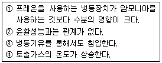
- ①,④
- ①,②,③
- ②,③
- ①,③
(정답률: 64%)
23. 증기 압축식 냉동 사이클에서 증발온도를 일정하게 유지하고 응축온도를 상승시킬 경우에 나타나는 현상중 잘못된 것은?
- 성적계수 감소
- 토출가스 온도 상승
- 소요동력 증대
- 플래쉬 가스 발생량 감소
(정답률: 85%)
24. 국소 대기압이 750[㎜Hg]이고, 계기 압력이 0.2[kgf/㎝2]일 때의 압력은 절대압력으로 몇 kgf/㎝2 인가?
- 0.46
- 0.96
- 1.22
- 1.36
(정답률: 96%)
25. 방열재의 구비조건으로 적당하지 않은 것은?
- 열전도율이 작을 것
- 사용온도 범위가 넓지 않을 것
- 흡습성이 작을 것
- 내구성이 있을 것
(정답률: 82%)
26. 염화나트륨 브라인을 사용한 식품냉장용 냉동장치에서 브라인의 순환량이 220ℓ /min이며, 냉각관 입구의 브라인온도가 -5℃, 출구의 브라인온도가 -9℃라면 이 브라인 쿨러의 냉동능력은 몇 ㎉/h 인가?(단, 브라인비열 : 0.75㎉/㎏℃, 비중 : 1.15이다)
- 39,600㎉/h
- 45,540㎉/h
- 60,720㎉/h
- 148,0⑤㎉/h
(정답률: 67%)
27. 압축기 피스톤 지름 130㎜, 행정 90㎜, 4기통, 1200rpm으로서 표준상태로 작동한다. 다음의 몰리에르 선도를 이용하여 냉매순환량(G)을 구하시오?
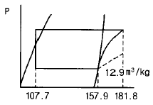
- 26.7㎏/h
- 343.8㎏/h
- 1257.4㎏/h
- 4438.1㎏/h
(정답률: 58%)
28. 프레온 냉매를 사용하는 냉동장치에 공기가 침입하면 어떤 현상이 일어나는가?
- 고압 압력이 높아지므로 냉매 순환량이 많아지고 냉동능력도 증가한다.
- 냉동톤당 소요동력이 증가한다.
- 고압 압력은 공기의 분압만큼 낮아진다.
- 배출가스의 온도가 상승하므로 응축기의 열통과율이 높아지고 냉동능력도 증가한다.
(정답률: 80%)
29. 표준 냉동사이클의 증발온도는 몇 ℃로 하는가?
- 0℃
- -5℃
- -10℃
- -15℃
(정답률: 77%)
30. 냉동장치에서 냉매액의 과냉각과 증기의 과열을 꾀하기 위해 액가스 열교환기를 설치할 때가 있다. 이 때 연결해야 할 배관은?
- 증발기 출구 배관과 증발기 입구 배관
- 압축기 흡입 배관과 응축기 출구 배관
- 압축기 토출 배관과 증발기 입구 배관
- 응축기 출구 배관과 압축기 출구 배관
(정답률: 63%)
31. T-S 선도와 같은 카르노 사이클에서 열펌프(Heat Pump)로 작동할때의 성적계수는?
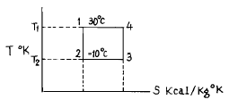
- 7.57
- 1.5
- 0.75
- 6.57
(정답률: 74%)
32. 액분리기에 대한 설명 중 틀린 것은?
- 액분리기에 모인 냉매액은 플로트 스위치를 이용하여 일정량씩 압축기의 크랭크케이스에 보내어 진다.
- 액분리기는 압축기 흡입측에 설치되어 있으며 액압축을 방지하는 것이 목적이다.
- 후레온 냉동장치에 액분리기를 설치한 경우, 오일은 압축기 크랭크 케이스로 보내고 분리된 액은 가압하여 고압 수액기로 보내어 진다.
- 입형 액분리기의 직경 크기는 액분리 능력에 관계가 있다.
(정답률: 67%)
33. 터보 압축기에 관한 설명 중 옳지 않는 것은?
- 원심력을 이용하여 가스를 압축한다.
- 토출압력을 매우 높게 할 수 있다.
- 날개차를 고속 회전시켜 냉매가스를 압축한다.
- 2단 및 3단의 것을 많이 사용한다.
(정답률: 45%)
34. 인벌류트 곡선에 의해서 구성된 고정익과 기본적으로 고정익과 같은 형상으로 이루워진 선회익으로 구성된 압축기는?
- 원심식 압축기
- 왕복동식 압축기
- 회전식 압축기
- 스크롤 압축기
(정답률: 59%)
35. 다음 중 장치내를 순환하는 냉매부족으로 인한 현상이 아닌 것은?
- 증발압력 감소
- 토출온도 증가
- 흡입온도 감소
- 과열도 증가
(정답률: 57%)
36. 30RT의 brine 냉각장치에서 brine 입구온도 -5℃,출구온도는 -10℃,냉매증발온도는 -15℃, 그리고 냉각 면적이 35m2라 할 때 이 냉각장치의 열통과율은? (단, 온도차는 대수평균온도차를 이용한다.)
- 394㎉/m2h℃
- 374㎉/m2h℃
- 256㎉/m2h℃
- 236㎉/m2h℃
(정답률: 78%)
37. 냉동장치의 팽창밸브 입구의 고압액체 냉매는 팽창밸브를 통과한 후 어떤 상태로 되어 증발기에 들어가는가?
- 모두 기화하여 저압저온의 증기가 된다.
- 액체 그대로 감압 및 냉각된다.
- 그 일부가 기화하여 저압저온의 액체로 된다.
- 팽창밸브 직전의 온도로 감압된 증기가 된다.
(정답률: 67%)
38. 냉동능력이 99,600㎉/h이고 압축소요 동력이 35㎾인 경우 응축기의 냉각수 입구온도 및 냉각수량을 각각 20℃ 및 360ℓ /min라 하면 응축기 출구의 냉각수 온도는 몇 ℃인가?
- 22
- 24
- 26
- 28
(정답률: 71%)
39. 냉매에 관한 다음 설명 중에서 맞는 것은?
- 암모니아 냉매가스가 누설된 경우 비중이 공기보다 무거우므로 바닥에 정체한다.
- 암모니아의 증발잠열은 프레온 보다 작다.
- 암모니아는 프레온에 비하여 동일 운전 압력조건에서는 토출가스 온도가 높다.
- 프레온은 화학적으로 안정한 냉매이므로 장치내에 수분이 혼입되어도 운전상 지장이 없다.
(정답률: 89%)
40. 20℃의 물 50ℓ 중에 -10℃의 얼음 2㎏을 넣어 완전히 용해시켰다. 외부와 완전히 절연되어 있을 때 물의 온도는 몇℃가 되는가 ? (단,물의 비열은 1㎉/㎏℃,얼음의 비열은 0.485㎉/㎏℃로 하며,융해열은 79.7㎉/㎏이다.)
- 13.75
- 15.98
- 17.62
- 20.35
(정답률: 56%)
3과목: 공기조화
41. 다음 공기선도상에서 난방풍량이 25,000CMH일 경우 가열 코일의 열량(㎉/h)은? (단, 공기의 비중량은 1.2kg/m3 이다.)
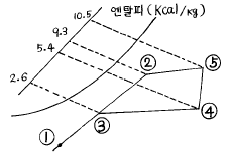
- 84,000
- 20,160
- 75,200
- 30,500
(정답률: 74%)
42. 다음 중 전공기방식이 아닌 것은?
- 이중 닥트 방식
- 단일 닥트 방식
- 멀티 조운 유니트 방식
- 유인 유니트 방식
(정답률: 77%)
43. 공기세정기에 공기중의 물방울이 송풍기 때문에 공기세정기 밖으로 빠져나가는 것을 방지하기 위하여 설치하는 것은?
- 플러싱 노즐
- 루버
- 스프레이 헤더
- 엘리미네이터
(정답률: 80%)
44. 다음 중 온수전용의 방열기는?
- 컨벡터
- 알루미늄 방열기
- 주철제 방열기
- 파이프코일
(정답률: 50%)
45. 덕트의 배치 방식 중 틀린 것은?
- 간선덕트 방식은 주덕트인 입상덕트로 부터 각 층에서 분기되어 각 취출구로 취출관을 연결한다.
- 개별 덕트 방식은 주덕트에서 각각의 취출구로 각각의 덕트를 통해 분산하여 송풍하는 방식으로 각실의 개별 제어성은 우수하다.
- 환상덕트 방식은 2개의 덕트말단을 루프(loop) 상태로 연결함으로써 덕트말단에 가까운 취출구에서 송풍량의 언밸런스가 발생될 수 있다.
- 각개 입상 덕트 방식은 호텔,오피스빌딩 등 공기. 수 방식인 덕트병용 팬코일 유닛방식이나 유인 유닛방식 등에 사용된다.
(정답률: 63%)
46. 변풍량 방식(VAV)의 특징에 관한 설명 중 가장 적합치 못한 내용은?
- 시운전시 각흡출구의 풍량 조정이 간단하다.
- 동시부하율을 고려하여 기기용량을 결정하게 되므로 설비용량을 적게할 수 있다.
- 부하변동을 정확하게 포착해서 실온을 유지하기 때문에 에너지의 낭비가 없다.
- 닥트의 누기(Air Leak)가 크게 허용되므로 재래식 닥트제작 공법도 허용된다.
(정답률: 75%)
47. 팬코일유닛(FCU)방식과 유인유닛(IDU)방식은 실내에 설치하는 유닛외에도 1차공조기를 사용하여 덕트방식을 채용 할 수도 있다. 이 방식들을 비교한 설명 중 올바르지 못한 것은?
- FCU는 IDU에 비해 운전 중의 소음이 적고, 동일 능력일 때에는 단가가 싸다.
- IDU에는 전용의 덕트계통이 필요하다.
- FCU에는 내부에 팬(fan)을 가지고 있어 보수할 필요가 있다.
- IDU는 내부조운을 합하더라도 하나의 덕트계통만으로 처리가 가능하다.
(정답률: 74%)
48. 냉방시 열의 종류와 설명이 틀린 것은?
- 인체의 발생열 - 현열,잠열
- 틈새바람에 의한 열량 - 현열,잠열
- 외기 도입량 - 현열,잠열
- 조명부하 - 현열,잠열
(정답률: 83%)
49. 병원건물의 공기조화시 가장 중요시 해야 할 사항은?
- 온도,압력조건
- 공기의 청정도
- 기류속도
- 소음
(정답률: 78%)
50. 수냉식 응축기에서 냉각수 출입구 온도차를 5℃, 냉각수량을 300 LPM로 하면 1시간에 이 냉각수 에서 흡수하는 열량은 석탄 몇 kg을 연소한 열량과 같은가? (단, 석탄의 발열량(Hf)은 6000㎉/kg로 하며, 열손실은 무시한다.)
- 5 kg
- 10 kg
- 15 kg
- 20 kg
(정답률: 80%)
51. 다음에서 온수 순환방식과 관계 없는 것은?
- 중력순환식
- 강제순환식
- 역환수방식
- 진공환수식
(정답률: 88%)
52. 연도는 보일러와 굴뚝(연돌)을 연결하는 부분이다. 연도로서 갖추어야 할 조건으로 적당하지 않은 것은?
- 연소가스의 유속이 적당하게 유지되도록 한다.
- 급격한 단면변화는 피한다.
- 길이는 될수록 길게 한다.
- 굴곡부가 적도록 배열한다.
(정답률: 75%)
53. 다음은 증기난방의 방식중 환수방식에 의한 분류를 한 것이다.적합치 않은 것은?
- 습식 환수식
- 건식 환수식
- 고압 환수식
- 진공 환수식
(정답률: 62%)
54. 덕트의 곡부, 분기부 등에서는 와류의 에너지 소비에 따르는 압력손실과 마찰에 의한 압력손실이 생기는데, 이 양자를 합한 것을 무엇이라 하는가?
- 곡률반경
- 상당길이
- 마찰저항
- 국부저항
(정답률: 64%)
55. 침입공기에 의한 잠열량(qL)의 계산식은 다음 중 어느 것인가 ? (단, Xo,Xi : 외기 및 실내공기의 절대습도 ㎏/㎏', to,ti : 외기 및 실내공기의 온도 ℃, G,Q : 공기의 질량 및 체적유량)
- qL = 0.24G(XO - Xi)㎉/h
- qL = 0.29Q(XO - Xi)㎉/h
- qL = 597G(to - ti)㎉/h
- qL = 720Q(XO - Xi)㎉/h
(정답률: 58%)
56. 다음의 난방 설비에 관한 기술 중 적당한 것은?
- 증기난방은 실내 상하 온도차가 적은 특징이 있다.
- 복사난방의 설비비는 온수나 증기난방에 비해 저렴하다.
- 방열기 트랩은 증기의 유량을 조절하는 작용을 한다.
- 온풍난방은 신속한 난방 효과를 얻을 수 있는 특징이 있다.
(정답률: 70%)
57. 온도 10℃ 상대습도 62%의 공기를 20℃로 가열하면 상대 습도는 몇 %로 되는가 ? (단,10℃의 포화수증기압은 0.012513㎏/㎝2, 20℃의 포화수증기압은 0.02383㎏/㎝2 이다.)
- 21.5%
- 11.5%
- 41.5%
- 32.6%
(정답률: 63%)
58. 다음 중 천장 취출방식이 아닌 것은?
- 아네모스탯(annemostat)형
- 팬(pan)형
- 트로퍼(troffer)형
- 유니버셜(universal)형
(정답률: 57%)
59. 덕트내 풍속을 측정하는 피토관을 이용하여 전압 23.8mmAq, 정압 10 mmAq를 측정하였다. 이 경우 풍속은 얼마인가?
- 10 m/s
- 15 m/s
- 20 m/s
- 25 m/s
(정답률: 67%)
60. 다음 중 축류식 송풍기의 형식이 아닌 것은?
- 프로펠러형
- 튜브형
- 베인형
- 방사형
(정답률: 40%)
4과목: 전기제어공학
61. 변압기의 1차 및 2차의 전압, 권회수, 전류를 V1, N1,Ｉ1 및 V2, N2,Ｉ2라 할 때 성립하는 식은?
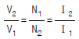
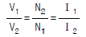
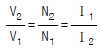
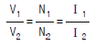
(정답률: 63%)
62. 콘덴서의 정전용량을 변화시켜서 발진기의 주파수를 1kHz로 하고자 한다. 이 때 발진기는 자동제어 용어 중 어느것에 해당되는가?
- 목표값
- 조작량
- 제어량
- 제어대상
(정답률: 42%)
63. 100Ω의 저항 3개를 Y결선한 것을 △결선으로 환산했을 때 각 저항의 크기는 몇 Ω 인가?
- 33
- 100
- 300
- 600
(정답률: 37%)
64. 변압기의 Y-Y결선방법의 특성을 설명한 것으로 틀린것은?
- 중성점을 접지할 수 있다.
- 절연이 용이하다.
- 선로에 제3조파를 주로하는 충전전류가 흘러 통신 장해가 생긴다.
- 단상변압기 3대로 운전하던중 1대가 고장이 발생 해도 간단하게 V결선 운전이 가능하다.
(정답률: 47%)
65. 유량, 압력, 액위, 농도, 밀도 등의 플랜트나 생산공정중의 상태량을 제어량으로 하는 제어는?
- 프로그램제어
- 프로세스제어
- 비율제어
- 자동조정
(정답률: 59%)
66. 변위를 변환시키는 요소는?
- 다이아프램
- 노즐플래퍼
- 전자석
- 벨로우즈
(정답률: 58%)
67. 연산증폭기의 응용회로가 아닌 것은?
- 적분기
- 아날로그 가산증폭기
- 미분기
- 디지털 반가산증폭기
(정답률: 37%)
68. 논리식
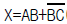
에서 동작 설명이 잘못된 것은?- A=1, B=0, C=1 이면 X=1 이다.
- A=1, B=1, C=0 이면 X=1 이다.
- A=0, B=0, C=0 이면 X=0 이다.
- A=0, B=0, C=1 이면 X=1 이다.
(정답률: 67%)
69. 온 오프(on-off)동작의 설명 중 옳은 것은?
- 간단한 단속적 제어동작이고 사이클링이 생긴다.
- 사이클링은 제거할 수 있으나 오프셋이 생긴다.
- 오프셋은 없앨 수 있으나 응답시간이 늦어질 수 있다.
- 응답속도는 빠르나 오프셋이 생긴다.
(정답률: 74%)
70. 그림과 같은 R-C 회로의 블럭선도를 그릴 때, ⓐ에 해당하는 것은?(단, R=1kΩ, C=10μF이다.)
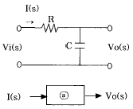
- 10-5S
- 10-2S
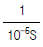
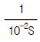
(정답률: 41%)
71. 그림과 같은 R-L직렬회로에서 공급전압이 10V일 때 VR이 8V이면 VL은 몇 V 인가?
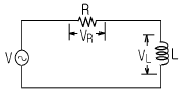
- 2
- 4
- 6
- 8
(정답률: 60%)
72. 10분 동안에 600C의 전기량이 이동했다고 하면 전류의 크기는 몇 A 인가?
- 1
- 10
- 60
- 600
(정답률: 64%)
73. 그림과 같은 병렬공진회로에서 주파수를 f라 할 때 전압 E 가 전류 Ｉ보다 앞서는 조건은?
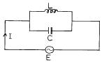
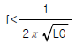
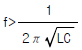
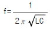
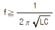
(정답률: 29%)
74. 그림과 같은 회로에서 전류계 3개로 단상전력을 측정할 때 유효전력은 몇 W 인가?(단, 전류계 A1, A2, A3에 흐르는 각 전류는 5A, 10A, 15A이고 저항 R은 10Ω이다.)
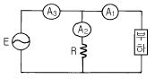
- 50
- 250
- 300
- 500
(정답률: 13%)
75. 제어요소는 무엇으로 구성되는가?
- 검출부
- 검출부와 조절부
- 검출부와 조작부
- 조작부와 조절부
(정답률: 62%)
76. 3상 농형유도전동기의 속도제어방법이 아닌 것은?
- 극수변환
- 2차저항제어
- 1차전압제어
- 주파수제어
(정답률: 31%)
77. 다음 진리값표와 가장 관계가 깊은 것은?
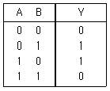
- NOR Gate
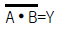
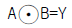
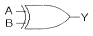
(정답률: 31%)
78. 전동기의 회전방향을 알기 위한 법칙은?
- 플레밍의 오른손법칙
- 플레밍의 왼손법칙
- 렌즈의 법칙
- 앙페에르의 법칙
(정답률: 53%)
79. 2차저항의 불평형에 의해 발생하는 소음으로 부하가 증가함에 따라 그 주기가 빠르고 심한 진동을 일으킬 수 있는 소음은?
- 슬립비트음
- 언밸런스에 의한 진동음
- 고주파 자속에 의한 진동음
- 브러시음
(정답률: 35%)
80. 회로에서 A와 B간의 합성저항은 몇 Ω 인가?(단, 각 저항의 단위는 모두 Ω이다.)
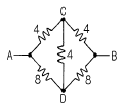
- 2.66
- 3.2
- 5.33
- 6.4
(정답률: 53%)
5과목: 배관일반
81. 유체의 흐름방향을 90° 변환시키는 밸브는?
- 앵글밸브
- 게이트밸브
- 첵크밸브
- 보올밸브
(정답률: 59%)
82. 다음은 증기배관의 표준구배에 대한 사항이다. 이 중 적당하지 않은 것은?
- 단관 중력 환수배관(상향공급식) : 1/100∼1/200
- 단관 중력 환수배관(하향공급식) : 1/50∼1/100
- 진공 환수배관의 증기주관(선하구배) : 1/200∼1/300
- 복관 중력 환수배관(건식:선하구배) : 1/50
(정답률: 22%)
83. 다음 증기난방 배관 방식중 잘못된 환수방식은?
- 기계환수식
- 하트포드환수식
- 중력환수식
- 진공환수식
(정답률: 62%)
84. 가스배관의 표시색상은 어느 것인가?
- 황색
- 흰색
- 청색
- 녹색
(정답률: 64%)
85. 플랜지(flange)를 규정하는 사항이 아닌 것은?
- 면(face)의 형상
- 파이프의 부착법
- 레이팅(rating)
- 파이프의 재질
(정답률: 36%)
86. 내구성이 가장 좋은 신축 이음쇠는?
- 루우프형
- 슬리이브형
- 벨로우즈형
- 팩레스형
(정답률: 56%)
87. 주철관을 소켓이음할 때 코킹작업을 하는 이유는?
- 누수방지
- 얀(yarn)과의 결합
- 강도 증가
- 진동에 견딤
(정답률: 53%)
88. 하향급수 배관에서 수평주관의 설치위치는?
- 지하층의 천장 또는 1층의 바닥
- 중간층의 바닥 또는 천장
- 최상층의 바닥 또는 천장
- 최상층의 천장 또는 옥상
(정답률: 50%)
89. 다음 신축이음 중 패킹재의 마모로 인하여 수시로 정비할 필요가 있는 것은?
- 스위블 신축이음
- 슬리브형 신축이음
- 신축곡관
- 벨로우즈형 신축이음
(정답률: 42%)
90. 온수배관에 대한 기술 중 틀린 것은 어느 것인가?
- 팽창관에는 밸브를 달지 않는다.
- 배관의 최저부에는 배수 밸브를 부착하는 것이 좋다.
- 공기밸브는 순환펌프의 흡입측에 부착하는 것이 좋다
- 수평관은 팽창탱크를 향하여 올림구배가 되도록 한다
(정답률: 56%)
91. 다음 도시기호 중 나사이음 크로스(cross)를 나타내는 것은?
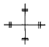
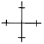
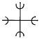
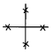
(정답률: 36%)
92. 암모니아 냉매를 사용하는 흡수식 냉동기의 배관재료로 가장 좋은 것은?
- 주철관
- 동관
- 강관
- 동합금강
(정답률: 58%)
93. 일반 배관용 강제 맞대기 용접식 관 이음쇠의 형상을 곡률 반경에 따라 장반경과 단반경으로 구분한다 이 중 장 반경의 이음쇠는 곡률 반경이 강관 호칭경의 몇 배를 말하는가?
- 1.5 배
- 1.0 배
- 2.0 배
- 2.5 배
(정답률: 45%)
94. 진공환수식 증기난방 배관에 관한 다음 설명 중 틀린것은?
- 환수관은 다른 방식에 비해 작아도 된다.
- 방열량을 광범위하게 조절할 수 있다.
- 이 방식은 방열기,보일러 등의 설치위치에 제한을 받지 않는다.
- 소규모 난방에서 이 방식이 많이 사용된다.
(정답률: 50%)
95. 호칭지름 20A의 강관을 곡률반지름 200㎜로서 120° 의 각도로 구부릴 때 필요한 파이프의 곡선 길이는 약 몇 mm인가?
- 390㎜
- 4⑤㎜
- 420㎜
- 487㎜
(정답률: 53%)
96. 유기질 보온재인 것은?
- 규조토
- 암면
- 펠트
- 탄산마그네슘
(정답률: 62%)
97. 보온재의 선정 조건으로 적당하지 않은 것은?
- 열전달률이 작아야 한다.
- 불연성이 있는 것이 좋다.
- 물리적 화학적 강도가 커야 한다.
- 내용 년수는 작아야 한다.
(정답률: 64%)
98. 가스배관에 있어서 틀린 것은?
- 건물내에서 반드시 노출배관 하는 것이 좋다.
- 물빼기 장치의 설치가 용이하게 한다.
- 적당한 구배를 둔다.
- 하중에 잘견디게 옥내에서는 벽속에 매립배관 한다.
(정답률: 46%)
99. 공기조화 설비용 냉,온수배관의 관경에 따른 유속으로 가장 적합한 것은?
- 20A - 0.1㎧
- 32A - 0.3 ㎧
- 50A - 1.5 ㎧
- 75A - 3.5 ㎧
(정답률: 58%)
100. 다음 중 급탕배관의 숏 서키트(Short circuit)현상을 방지할 수 있는 배관 방식은 무엇인가?
- 리버스 리턴 배관방식
- 다이렉트 리턴 배관방식
- 단관식 배관방식
- 상향식 배관방식
(정답률: 69%)